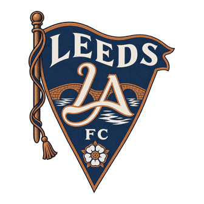
Leeds Aire FCEngland · ENG-7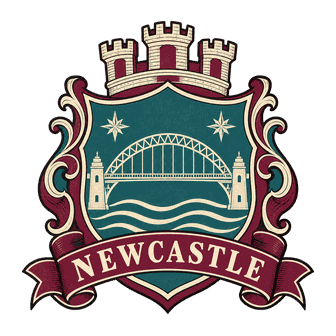
Newcastle Tyne FCEngland · ENG-8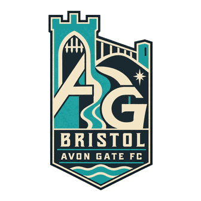
Bristol Avon Gate FCEngland · ENG-C4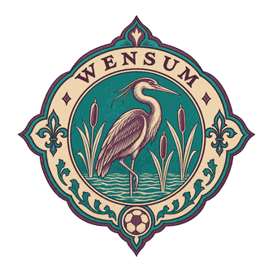
Norwich Wensum FCEngland · ENG-C5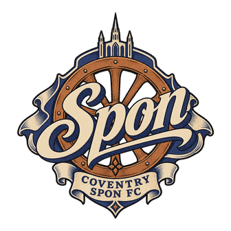
Coventry Spon FCEngland · ENG-C6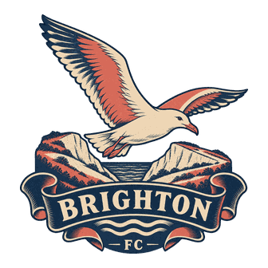
Brighton Downs FCEngland · ENG-C7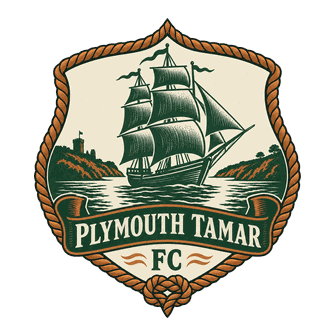
Plymouth Tamar FCEngland · ENG-C8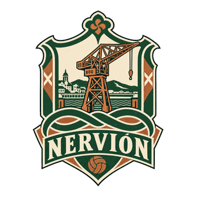
Bilbao Nervión CFSpanien · ESP-7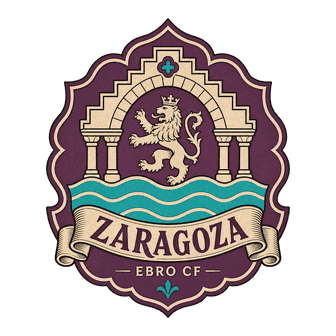
Zaragoza Ebro CFSpanien · ESP-8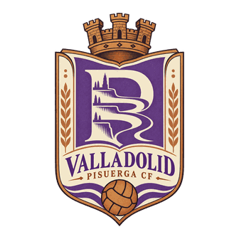
Valladolid Pisuerga CFSpanien · ESP-C3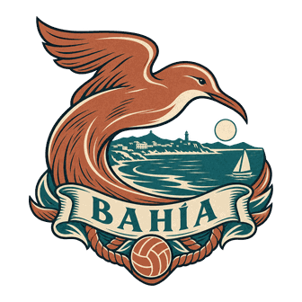
Santander Bahía CFSpanien · ESP-C4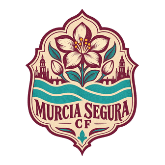
Murcia Segura CFSpanien · ESP-C5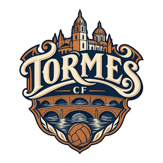
Salamanca Tormes CFSpanien · ESP-C6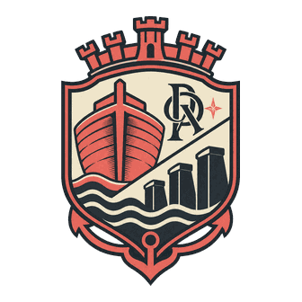
Almería Dársena CFSpanien · ESP-C8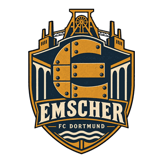
FC Dortmund EmscherDeutschland · GER-7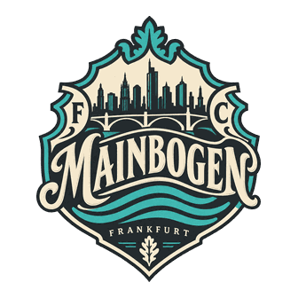
FC Frankfurt MainbogenDeutschland · GER-8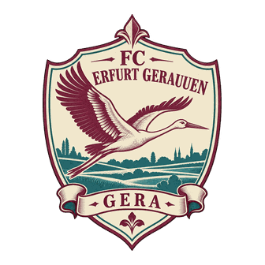
FC Erfurt GeraauenDeutschland · GER-C3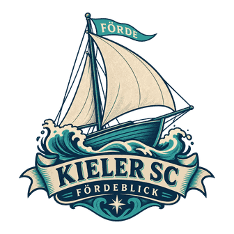
Kieler SC FördeblickDeutschland · GER-C4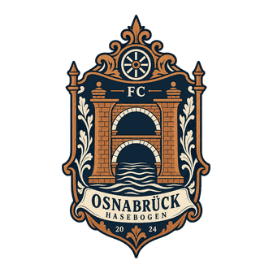
FC Osnabrück HasebogenDeutschland · GER-C5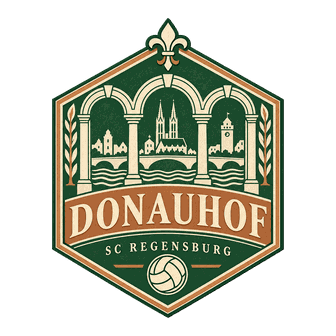
SC Regensburg DonauhofDeutschland · GER-C6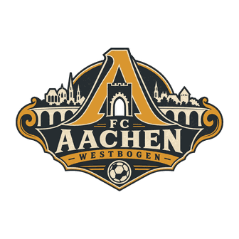
FC Aachen WestbogenDeutschland · GER-C8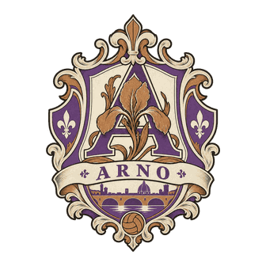
Firenze Arno ACItalien · ITA-7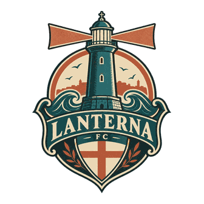
Genova Lanterna FCItalien · ITA-8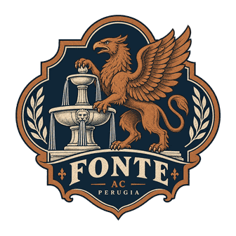
Perugia Fonte ACItalien · ITA-C3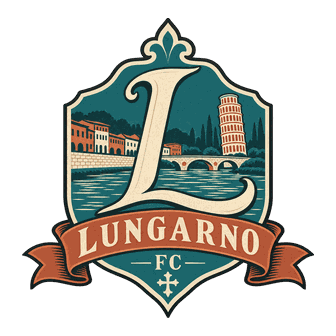
Pisa Lungarno FCItalien · ITA-C4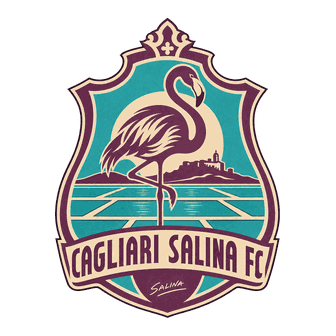
Cagliari Salina FCItalien · ITA-C5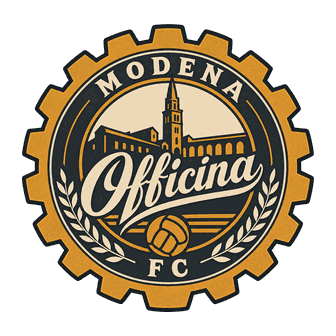
Modena Officina FCItalien · ITA-C7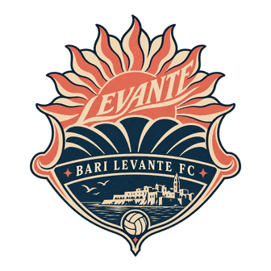
Bari Levante FCItalien · ITA-C8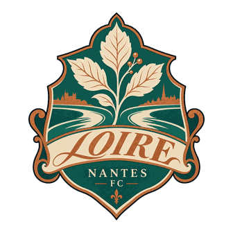
Nantes Loire FCFrankreich · FRA-7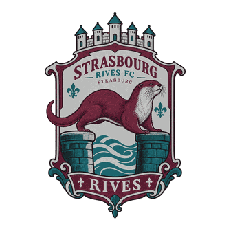
Strasbourg Rives FCFrankreich · FRA-8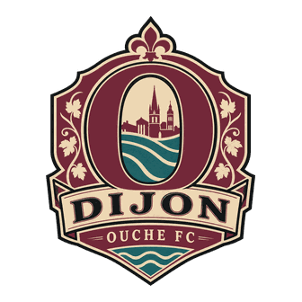
Dijon Ouche FCFrankreich · FRA-C3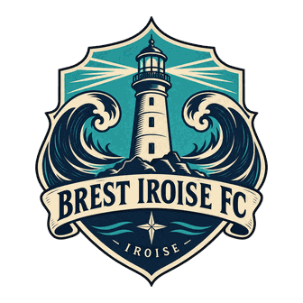
Brest Iroise FCFrankreich · FRA-C4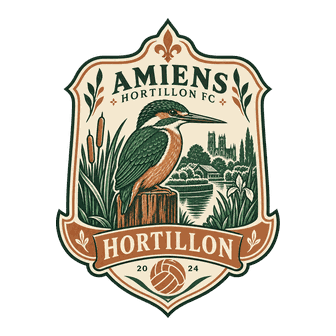
Amiens Hortillon FCFrankreich · FRA-C5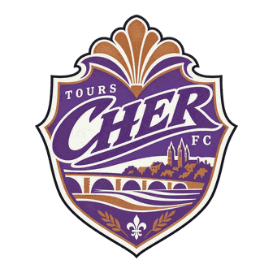
Tours Cher FCFrankreich · FRA-C6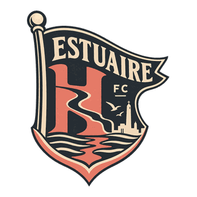
Le Havre Estuaire FCFrankreich · FRA-C8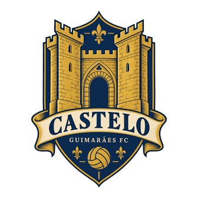
Guimarães Castelo FCPortugal · POR-7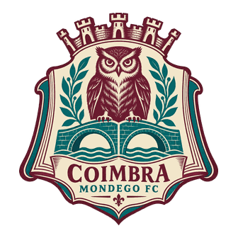
Coimbra Mondego FCPortugal · POR-C3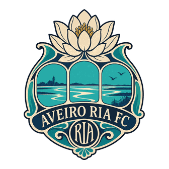
Aveiro Ria FCPortugal · POR-C4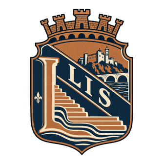
Leiria Lis FCPortugal · POR-C5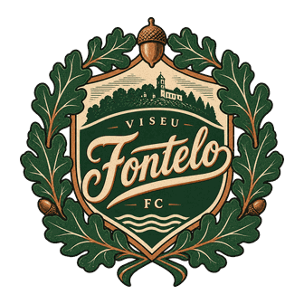
Viseu Fontelo FCPortugal · POR-C6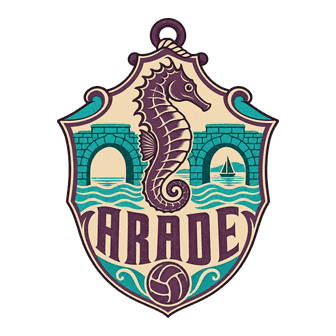
Portimão Arade FCPortugal · POR-C7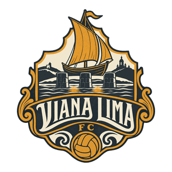
Viana Lima FCPortugal · POR-C8